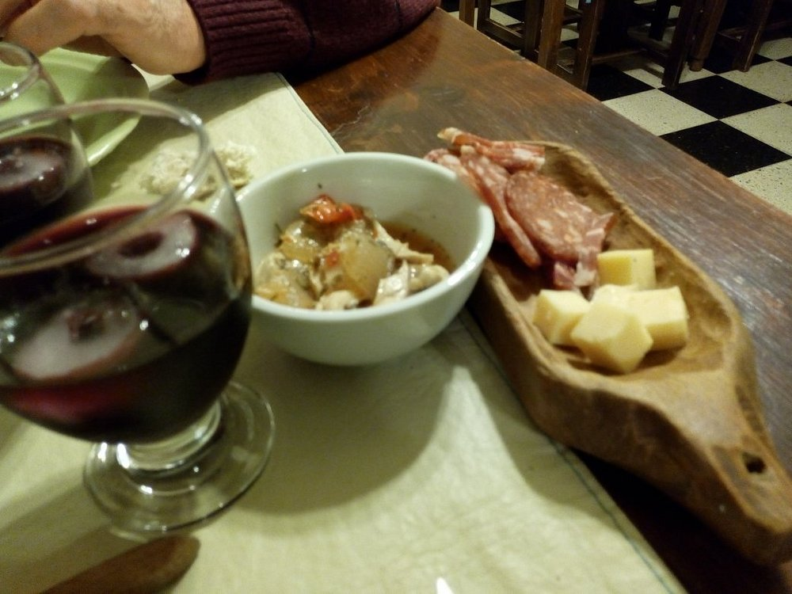
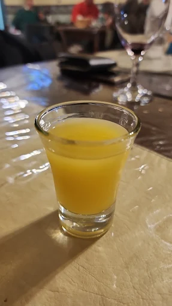

Nuestro Menú
Platos caseros, sabrosos y preparados con ingredientes frescos. Ideal para disfrutar en familia o con amigos.
Entradas
- Empanadas de carne cortada a cuchillo
- Provoleta con orégano y tomate
- Tabla de fiambres artesanales

Platos Principales
- Milanesa napolitana con papas rústicas
- Sorrentinos caseros de jamón y queso
- Bife de chorizo con vegetales grillados
Postres
- Flan casero con dulce de leche
- Helado artesanal
- Tarta de manzana tibia con crema
Bebidas
- Aguas saborizadas y minerales
- Gaseosas
- Lemonchello artesanal
